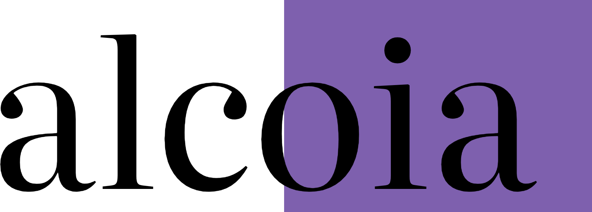
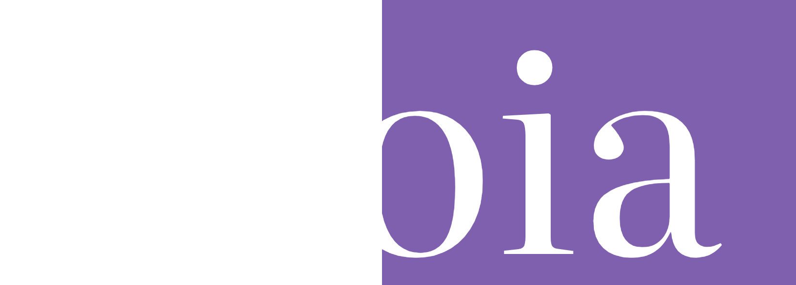

However these are set, you are interrupted at most once every three minutes and five times a session, and never twice on the same paragraph.
You read a short passage at your normal pace and say when you are done. That sets the baseline every pace signal is compared against. No camera involved. Without it, your baseline is learned slowly from ordinary reading — which is exactly the period when the pace judgements are least reliable.
The receipt is yours. It is built on your machine, shown to you before it goes anywhere, and never sent on its own.
These describe what was observed, not what you were feeling. Unknown is the normal answer when the signals do not agree — nothing interrupts you on it.
Open the padlock in the address bar, then Permissions, and allow the camera for this site.
The camera is a secondary sensor: it reports whether you are at the screen and roughly which region you are looking at. Detection runs without it.
Forces the matching intervention on the paragraph in view, for testing.